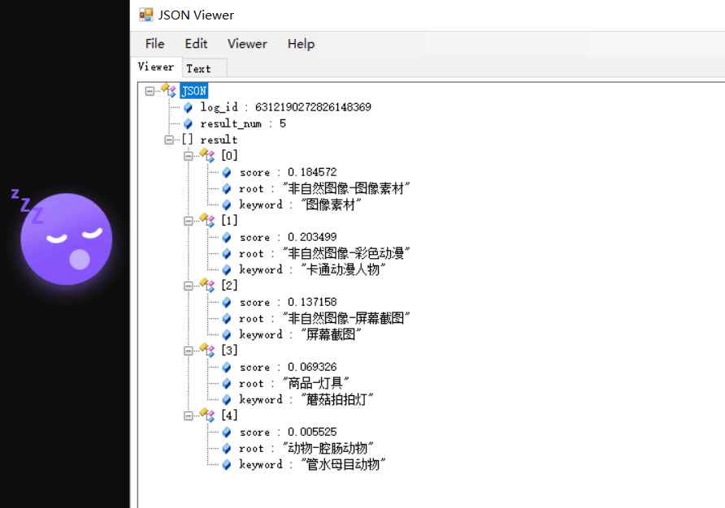

第一步，依赖百度api
1 | <dependency> |
获取百度云的token，在此之前先到百度云申请一个程序
1 | package com.baidu.test.commons; |
下载依赖工具包
下载地址:1
2
3
4* https://ai.baidu.com/file/658A35ABAB2D404FBF903F64D47C1F72
* https://ai.baidu.com/file/C8D81F3301E24D2892968F09AE1AD6E2
* https://ai.baidu.com/file/544D677F5D4E4F17B4122FBD60DB82B3
* https://ai.baidu.com/file/470B3ACCA3FE43788B5A963BF0B625F3
自己封装需要需要的工具类，这里就展示我自己封装的物体识别的工具类
1 |
|
这里的工具类只是用作百度物体识别，根据自己的需求来进行封装
注意，这里我因为业务需要，只取了第一个，其他剩下超过50%我才会取。
最后，进行测试
1 | public static void main(String[] args) { |
